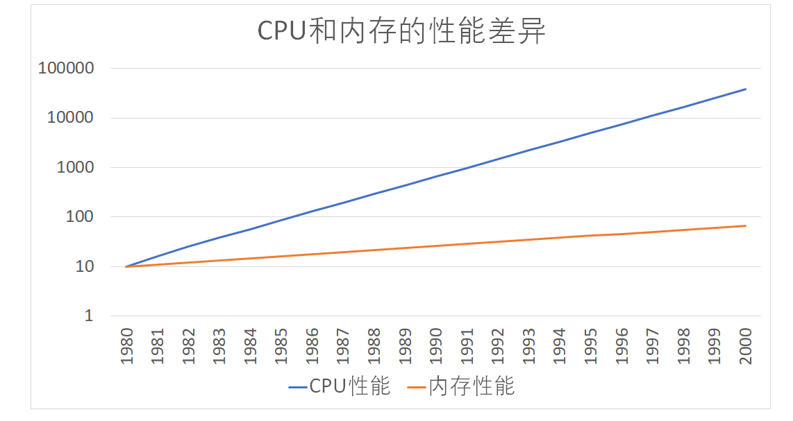
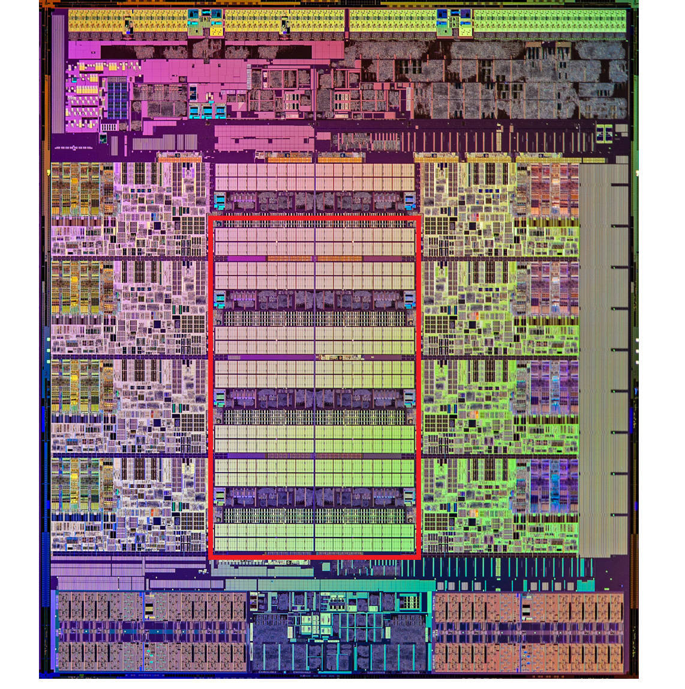
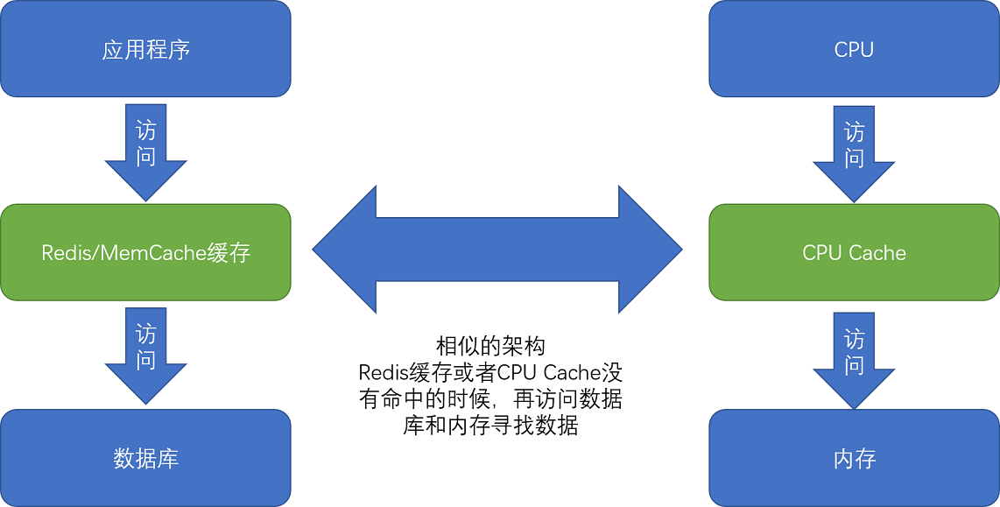
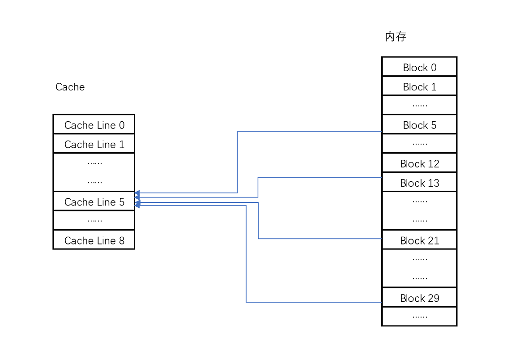
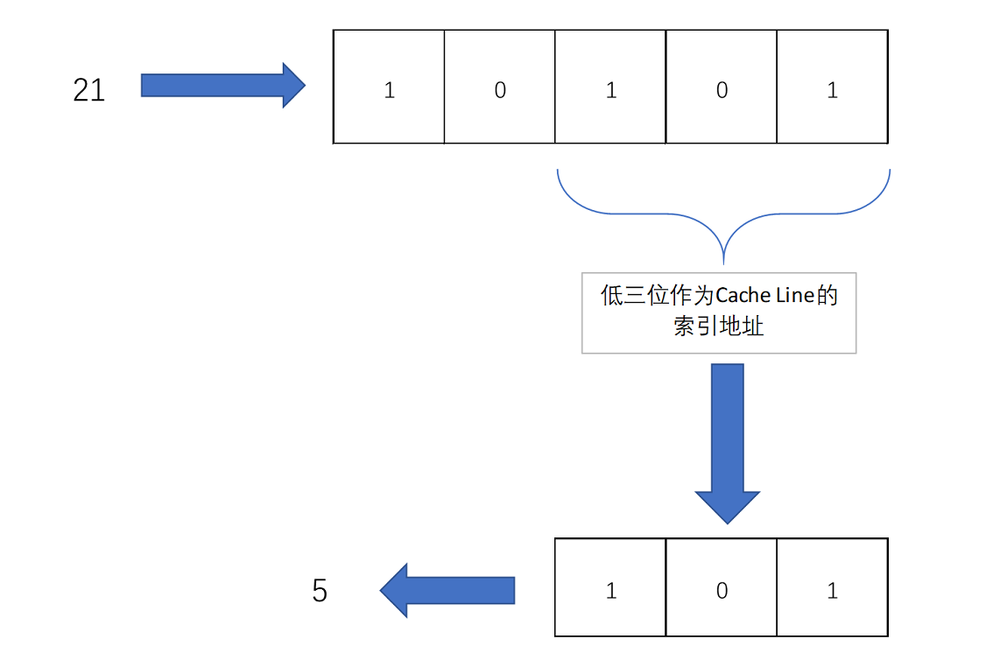
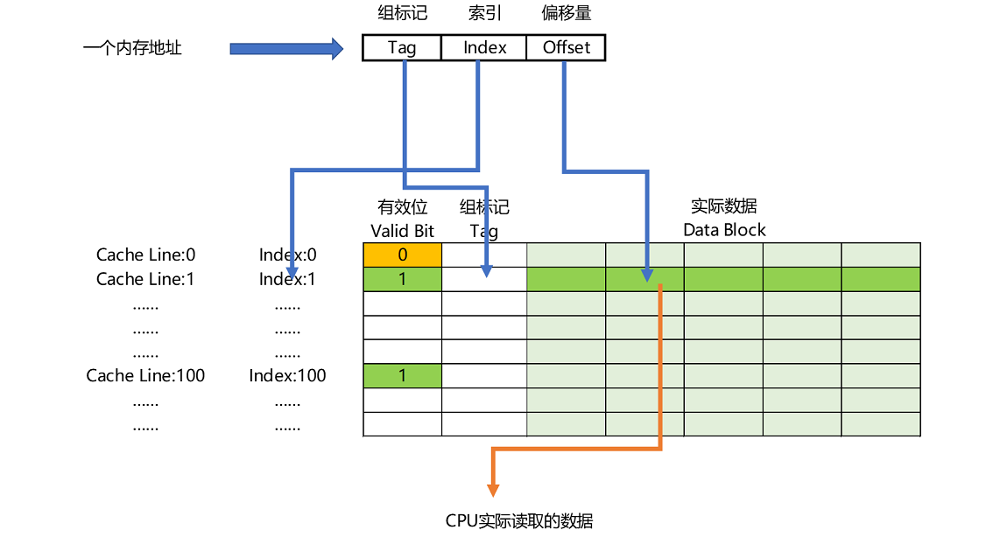

- 00 开篇词 为什么你需要学习计算机组成原理？.md.html
- 01 冯·诺依曼体系结构：计算机组成的金字塔.md.html
- 02 给你一张知识地图，计算机组成原理应该这么学.md.html
- 03 通过你的CPU主频，我们来谈谈“性能”究竟是什么？.md.html
- 04 穿越功耗墙，我们该从哪些方面提升“性能”？.md.html
- 05 计算机指令：让我们试试用纸带编程.md.html
- 06 指令跳转：原来if...else就是goto.md.html
- 07 函数调用：为什么会发生stack overflow？.md.html
- 08 ELF和静态链接：为什么程序无法同时在Linux和Windows下运行？.md.html
- 09 程序装载：“640K内存”真的不够用么？.md.html
- 10 动态链接：程序内部的“共享单车”.md.html
- 11 二进制编码：“手持两把锟斤拷，口中疾呼烫烫烫”？.md.html
- 12 理解电路：从电报机到门电路，我们如何做到“千里传信”？.md.html
- 13 加法器：如何像搭乐高一样搭电路（上）？.md.html
- 14 乘法器：如何像搭乐高一样搭电路（下）？.md.html
- 15 浮点数和定点数（上）：怎么用有限的Bit表示尽可能多的信息？.md.html
- 16 浮点数和定点数（下）：深入理解浮点数到底有什么用？.md.html
- 17 建立数据通路（上）：指令加运算=CPU.md.html
- 18 建立数据通路（中）：指令加运算=CPU.md.html
- 19 建立数据通路（下）：指令加运算=CPU.md.html
- 20 面向流水线的指令设计（上）：一心多用的现代CPU.md.html
- 21 面向流水线的指令设计（下）：奔腾4是怎么失败的？.md.html
- 22 冒险和预测（一）：hazard是“危”也是“机”.md.html
- 23 冒险和预测（二）：流水线里的接力赛.md.html
- 24 冒险和预测（三）：CPU里的“线程池”.md.html
- 25 冒险和预测（四）：今天下雨了，明天还会下雨么？.md.html
- 26 Superscalar和VLIW：如何让CPU的吞吐率超过1？.md.html
- 27 SIMD：如何加速矩阵乘法？.md.html
- 28 异常和中断：程序出错了怎么办？.md.html
- 29 CISC和RISC：为什么手机芯片都是ARM？.md.html
- 30 GPU（上）：为什么玩游戏需要使用GPU？.md.html
- 31 GPU（下）：为什么深度学习需要使用GPU？.md.html
- 32 FPGA、ASIC和TPU（上）：计算机体系结构的黄金时代.md.html
- 33 解读TPU：设计和拆解一块ASIC芯片.md.html
- 34 理解虚拟机：你在云上拿到的计算机是什么样的？.md.html
- 35 存储器层次结构全景：数据存储的大金字塔长什么样？.md.html
- 36 局部性原理：数据库性能跟不上，加个缓存就好了？.md.html
- 37 理解CPU Cache（上）：“4毫秒”究竟值多少钱？.md.html
- 38 高速缓存（下）：你确定你的数据更新了么？.md.html
- 39 MESI协议：如何让多核CPU的高速缓存保持一致？.md.html
- 40 理解内存（上）：虚拟内存和内存保护是什么？.md.html
- 41 理解内存（下）：解析TLB和内存保护.md.html
- 42 总线：计算机内部的高速公路.md.html
- 43 输入输出设备：我们并不是只能用灯泡显示“0”和“1”.md.html
- 44 理解IO_WAIT：IO性能到底是怎么回事儿？.md.html
- 45 机械硬盘：Google早期用过的“黑科技”.md.html
- 46 SSD硬盘（上）：如何完成性能优化的KPI？.md.html
- 47 SSD硬盘（下）：如何完成性能优化的KPI？.md.html
- 48 DMA：为什么Kafka这么快？.md.html
- 49 数据完整性（上）：硬件坏了怎么办？.md.html
- 50 数据完整性（下）：如何还原犯罪现场？.md.html
- 51 分布式计算：如果所有人的大脑都联网会怎样？.md.html
- 52 设计大型DMP系统（上）：MongoDB并不是什么灵丹妙药.md.html
- 53 设计大型DMP系统（下）：SSD拯救了所有的DBA.md.html
- 54 理解Disruptor（上）：带你体会CPU高速缓存的风驰电掣.md.html
- 55 理解Disruptor（下）：不需要换挡和踩刹车的CPU，有多快？.md.html
- 结束语 知也无涯，愿你也享受发现的乐趣.md.html
- 捐赠
37 理解CPU Cache（上）：“4毫秒”究竟值多少钱？
在这一节内容开始之前，我们先来看一个 3 行的小程序。你可以猜一猜，这个程序里的循环 1 和循环 2，运行所花费的时间会差多少？你可以先思考几分钟，然后再看我下面的解释。
int[] arr = new int[64 * 1024 * 1024];
// 循环 1
for (int i = 0; i < arr.length; i++) arr[i] *= 3;
// 循环 2
for (int i = 0; i < arr.length; i += 16) arr[i] *= 3
在这段 Java 程序中，我们首先构造了一个 64×1024×1024 大小的整型数组。在循环 1 里，我们遍历整个数组，将数组中每一项的值变成了原来的 3 倍；在循环 2 里，我们每隔 16 个索引访问一个数组元素，将这一项的值变成了原来的 3 倍。
按道理来说，循环 2 只访问循环 1 中 1⁄16 的数组元素，只进行了循环 1 中 1⁄16 的乘法计算，那循环 2 花费的时间应该是循环 1 的 1⁄16 左右。但是实际上，循环 1 在我的电脑上运行需要 50 毫秒，循环 2 只需要 46 毫秒。这两个循环花费时间之差在 15% 之内。
为什么会有这 15% 的差异呢？这和我们今天要讲的 CPU Cache 有关。之前我们看到了内存和硬盘之间存在的巨大性能差异。在 CPU 眼里，内存也慢得不行。于是，聪明的工程师们就在 CPU 里面嵌入了 CPU Cache（高速缓存），来解决这一问题。
我们为什么需要高速缓存?
按照摩尔定律，CPU 的访问速度每 18 个月便会翻一番，相当于每年增长 60%。内存的访问速度虽然也在不断增长，却远没有这么快，每年只增长 7% 左右。而这两个增长速度的差异，使得 CPU 性能和内存访问性能的差距不断拉大。到今天来看，一次内存的访问，大约需要 120 个 CPU Cycle，这也意味着，在今天，CPU 和内存的访问速度已经有了 120 倍的差距。
如果拿我们现实生活来打个比方的话，CPU 的速度好比风驰电掣的高铁，每小时 350 公里，然而，它却只能等着旁边腿脚不太灵便的老太太，也就是内存，以每小时 3 公里的速度缓慢步行。因为 CPU 需要执行的指令、需要访问的数据，都在这个速度不到自己 1% 的内存里。

随着时间变迁，CPU 和内存之间的性能差距越来越大
为了弥补两者之间的性能差异，我们能真实地把 CPU 的性能提升用起来，而不是让它在那儿空转，我们在现代 CPU 中引入了高速缓存。
从 CPU Cache 被加入到现有的 CPU 里开始，内存中的指令、数据，会被加载到 L1-L3 Cache 中，而不是直接由 CPU 访问内存去拿。在 95% 的情况下，CPU 都只需要访问 L1-L3 Cache，从里面读取指令和数据，而无需访问内存。要注意的是，这里我们说的 CPU Cache 或者 L1/L3 Cache，不是一个单纯的、概念上的缓存（比如之前我们说的拿内存作为硬盘的缓存），而是指特定的由 SRAM 组成的物理芯片。
这里是一张 Intel CPU 的放大照片。这里面大片的长方形芯片，就是这个 CPU 使用的 20MB 的 L3 Cache。

现代 CPU 中大量的空间已经被 SRAM 占据，图中用红色框出的部分就是 CPU 的 L3 Cache 芯片
在这一讲一开始的程序里，运行程序的时间主要花在了将对应的数据从内存中读取出来，加载到 CPU Cache 里。CPU 从内存中读取数据到 CPU Cache 的过程中，是一小块一小块来读取数据的，而不是按照单个数组元素来读取数据的。这样一小块一小块的数据，在 CPU Cache 里面，我们把它叫作 Cache Line（缓存块）。
在我们日常使用的 Intel 服务器或者 PC 里，Cache Line 的大小通常是 64 字节。而在上面的循环 2 里面，我们每隔 16 个整型数计算一次，16 个整型数正好是 64 个字节。于是，循环 1 和循环 2，需要把同样数量的 Cache Line 数据从内存中读取到 CPU Cache 中，最终两个程序花费的时间就差别不大了。
知道了为什么需要 CPU Cache，接下来，我们就来看一看，CPU 究竟是如何访问 CPU Cache 的，以及 CPU Cache 是如何组织数据，使得 CPU 可以找到自己想要访问的数据的。因为 Cache 作为“缓存”的意思，在很多别的存储设备里面都会用到。为了避免你混淆，在表示抽象的“缓存“概念时，用中文的“缓存”；如果是 CPU Cache，我会用“高速缓存“或者英文的“Cache”，来表示。
Cache 的数据结构和读取过程是什么样的？
现代 CPU 进行数据读取的时候，无论数据是否已经存储在 Cache 中，CPU 始终会首先访问 Cache。只有当 CPU 在 Cache 中找不到数据的时候，才会去访问内存，并将读取到的数据写入 Cache 之中。当时间局部性原理起作用后，这个最近刚刚被访问的数据，会很快再次被访问。而 Cache 的访问速度远远快于内存，这样，CPU 花在等待内存访问上的时间就大大变短了。

这样的访问机制，和我们自己在开发应用系统的时候，“使用内存作为硬盘的缓存”的逻辑是一样的。在各类基准测试（Benchmark）和实际应用场景中，CPU Cache 的命中率通常能达到 95% 以上。
问题来了，CPU 如何知道要访问的内存数据，存储在 Cache 的哪个位置呢？接下来，我就从最基本的直接映射 Cache（Direct Mapped Cache）说起，带你来看整个 Cache 的数据结构和访问逻辑。
在开头的 3 行小程序里我说过，CPU 访问内存数据，是一小块一小块数据来读取的。对于读取内存中的数据，我们首先拿到的是数据所在的内存块（Block）的地址。而直接映射 Cache 采用的策略，就是确保任何一个内存块的地址，始终映射到一个固定的 CPU Cache 地址（Cache Line）。而这个映射关系，通常用 mod 运算（求余运算）来实现。下面我举个例子帮你理解一下。
比如说，我们的主内存被分成 0～31 号这样 32 个块。我们一共有 8 个缓存块。用户想要访问第 21 号内存块。如果 21 号内存块内容在缓存块中的话，它一定在 5 号缓存块（21 mod 8 = 5）中。

Cache 采用 mod 的方式，把内存块映射到对应的 CPU Cache 中
实际计算中，有一个小小的技巧，通常我们会把缓存块的数量设置成 2 的 N 次方。这样在计算取模的时候，可以直接取地址的低 N 位，也就是二进制里面的后几位。比如这里的 8 个缓存块，就是 2 的 3 次方。那么，在对 21 取模的时候，可以对 21 的 2 进制表示 10101 取地址的低三位，也就是 101，对应的 5，就是对应的缓存块地址。

取 Block 地址的低位，就能得到对应的 Cache Line 地址，除了 21 号内存块外，13 号、5 号等很多内存块的数据，都对应着 5 号缓存块中。既然如此，假如现在 CPU 想要读取 21 号内存块，在读取到 5 号缓存块的时候，我们怎么知道里面的数据，究竟是不是 21 号对应的数据呢？同样，建议你借助现有知识，先自己思考一下，然后再看我下面的分析，这样会印象比较深刻。
这个时候，在对应的缓存块中，我们会存储一个组标记（Tag）。这个组标记会记录，当前缓存块内存储的数据对应的内存块，而缓存块本身的地址表示访问地址的低 N 位。就像上面的例子，21 的低 3 位 101，缓存块本身的地址已经涵盖了对应的信息、对应的组标记，我们只需要记录 21 剩余的高 2 位的信息，也就是 10 就可以了。
除了组标记信息之外，缓存块中还有两个数据。一个自然是从主内存中加载来的实际存放的数据，另一个是有效位（valid bit）。啥是有效位呢？它其实就是用来标记，对应的缓存块中的数据是否是有效的，确保不是机器刚刚启动时候的空数据。如果有效位是 0，无论其中的组标记和 Cache Line 里的数据内容是什么，CPU 都不会管这些数据，而要直接访问内存，重新加载数据。
CPU 在读取数据的时候，并不是要读取一整个 Block，而是读取一个他需要的整数。这样的数据，我们叫作 CPU 里的一个字（Word）。具体是哪个字，就用这个字在整个 Block 里面的位置来决定。这个位置，我们叫作偏移量（Offset）。
总结一下，一个内存的访问地址，最终包括高位代表的组标记、低位代表的索引，以及在对应的 Data Block 中定位对应字的位置偏移量。

内存地址到 Cache Line 的关系
而内存地址对应到 Cache 里的数据结构，则多了一个有效位和对应的数据，由“索引 + 有效位 + 组标记 + 数据”组成。如果内存中的数据已经在 CPU Cache 里了，那一个内存地址的访问，就会经历这样 4 个步骤：
- 根据内存地址的低位，计算在 Cache 中的索引；
- 判断有效位，确认 Cache 中的数据是有效的；
- 对比内存访问地址的高位，和 Cache 中的组标记，确认 Cache 中的数据就是我们要访问的内存数据，从 Cache Line 中读取到对应的数据块（Data Block）；
- 根据内存地址的 Offset 位，从 Data Block 中，读取希望读取到的字。
如果在 2、3 这两个步骤中，CPU 发现，Cache 中的数据并不是要访问的内存地址的数据，那 CPU 就会访问内存，并把对应的 Block Data 更新到 Cache Line 中，同时更新对应的有效位和组标记的数据。
好了，讲到这里，相信你明白现代 CPU，是如何通过直接映射 Cache，来定位一个内存访问地址在 Cache 中的位置了。其实，除了直接映射 Cache 之外，我们常见的缓存放置策略还有全相连 Cache（Fully Associative Cache）、组相连 Cache（Set Associative Cache）。这几种策略的数据结构都是相似的，理解了最简单的直接映射 Cache，其他的策略你很容易就能理解了。
减少 4 毫秒，公司挣了多少钱?
刚才我花了很多篇幅，讲了 CPU 和内存之间的性能差异，以及我们如何通过 CPU Cache 来尽可能解决这两者之间的性能鸿沟。你可能要问了，这样做的意义和价值究竟是什么？毕竟，一次内存的访问，只不过需要 100 纳秒而已。1 秒钟时间内，足有 1000 万个 100 纳秒。别着急，我们先来看一个故事。
2008 年，一家叫作 Spread Networks 的通信公司花费 3 亿美元，做了一个光缆建设项目。目标是建设一条从芝加哥到新泽西，总长 1331 公里的光缆线路。建设这条线路的目的，其实是为了将两地之间原有的网络访问延时，从 17 毫秒降低到 13 毫秒。
你可能会说，仅仅缩短了 4 毫秒时间啊，却花费 3 个亿，真的值吗？为这 4 毫秒时间买单的，其实是一批高频交易公司。它们以 5 年 1400 万美元的价格，使用这条线路。利用这短短的 4 毫秒的时间优势，这些公司通过高性能的计算机程序，在芝加哥和新泽西两地的交易所进行高频套利，以获得每年以 10 亿美元计的利润。现在你还觉得这个不值得吗？
其实，只要 350 微秒的差异，就足够高频交易公司用来进行无风险套利了。而 350 微秒，如果用来进行 100 纳秒一次的内存访问，大约只够进行 3500 次。而引入 CPU Cache 之后，我们可以进行的数据访问次数，提升了数十倍，使得各种交易策略成为可能。
总结延伸
很多时候，程序的性能瓶颈，来自使用 DRAM 芯片的内存访问速度。
根据摩尔定律，自上世纪 80 年代以来，CPU 和内存的性能鸿沟越拉越大。于是，现代 CPU 的设计者们，直接在 CPU 中嵌入了使用更高性能的 SRAM 芯片的 Cache，来弥补这一性能差异。通过巧妙地将内存地址，拆分成“索引 + 组标记 + 偏移量”的方式，使得我们可以将很大的内存地址，映射到很小的 CPU Cache 地址里。而 CPU Cache 带来的毫秒乃至微秒级别的性能差异，又能带来巨大的商业利益，十多年前的高频交易行业就是最好的例子。
在搞清楚从内存加载数据到 Cache，以及从 Cache 里读取到想要的数据之后，我们又要面临一个新的挑战了。CPU 不仅要读数据，还需要写数据，我们不能只把数据写入到 Cache 里面就结束了。下一讲，我们就来仔细讲讲，CPU 要写入数据的时候，怎么既不牺牲性能，又能保证数据的一致性。
推荐阅读
如果你学有余力，这里有两篇文章推荐给你阅读。
如果想深入了解 CPU 和内存之间的访问性能，你可以阅读What Every Programmer Should Know About Memory。
现代 CPU 已经很少使用直接映射 Cache 了，通常用的是组相连 Cache（set associative cache），想要了解组相连 Cache，你可以阅读《计算机组成与设计：硬件 / 软件接口》的 5.4.1 小节。
© 2019 - 2023 Liangliang Lee. Powered by gin and hexo-theme-book.